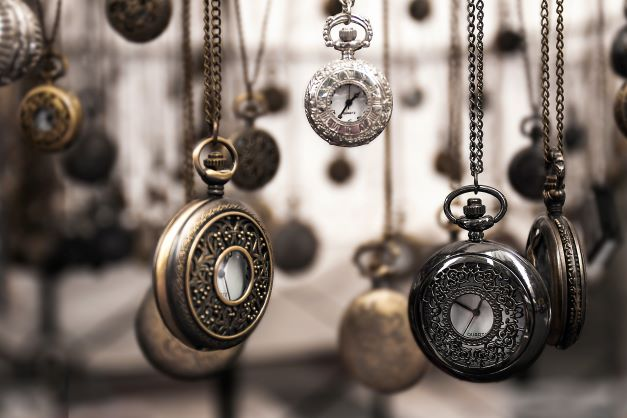

Amaizing Places
Enlightment is key to human. Theres is fun i travelling the world and explore how the same species can live
differently and how nature and environments can tame it inhibitours.
I mostly love travelling coz its
therapy in its self. You learn alot from self indulgence. I geuss the primary reason for growth is to learn.
That many of the folks around are too afraid to commit themself to mastering, they want the easy way out.
New places new ideas and new vibe. Explore my people.

Time is Essential
Time has been our constant "k" like you manage it well, you become amaizingly increadible.
Human has the
tendancy to dodge whats is impotart for the sake of mere plesuare. We get distracted easly from our geneus
self only to satisfy the feeling brain. I know we are better than this but thats only to the one's termed
wiered or strong of will.
The road to succes is an uphill that I see most of my peers and wounder how do
they want their old age to be. Time is everything.
A man has to do what he ought to do.
Old is Gold
As time being our seirving factor, we mostly tend to fogget that we are alive for a reason and a seasson and
that we should live a meaningfull kind of.
There are two types of commodities in the market, one are those
that depresiate with time and those that increase in value with time. You have to be wish in your selection
coz in the long run time is still clicking and you still have to make a choice.
i recently realised that
undession is also a desicion. Be wise and bold.
Brighter Days
At long run, we have to have something that we all hope for and to most achiving that has been a hussle.
People a afraid of their ownself. Thats the reason most of us can't withstand a 30-minutes maditation. One
thing i can say is that we all need to accept how everything is and start working on how to improve the
situation. Don't kill yourself with lots of drug, be smart and make those bold moves.
You gat this.